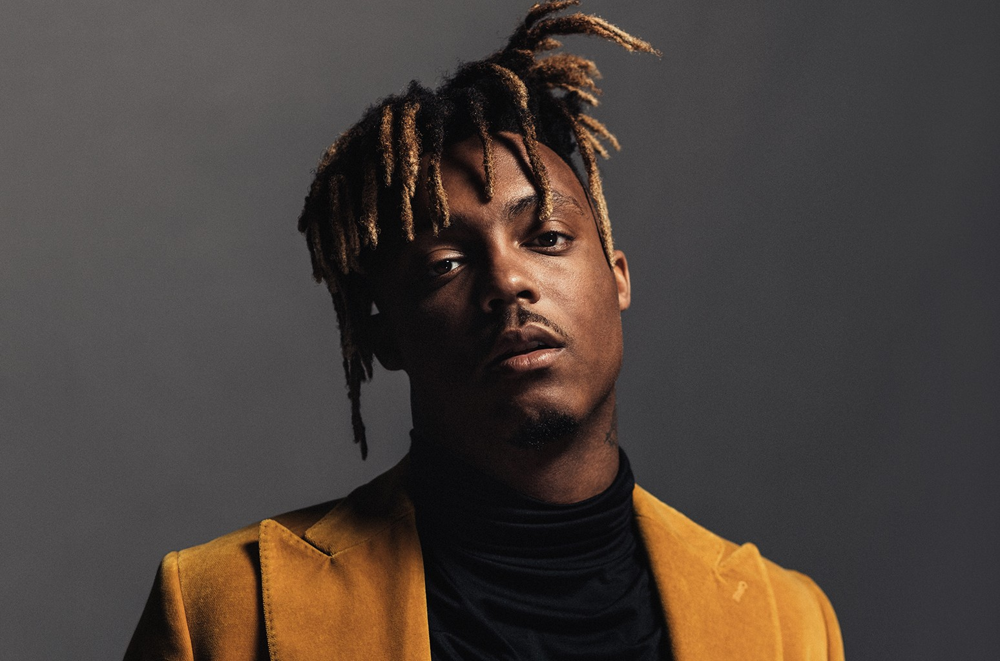
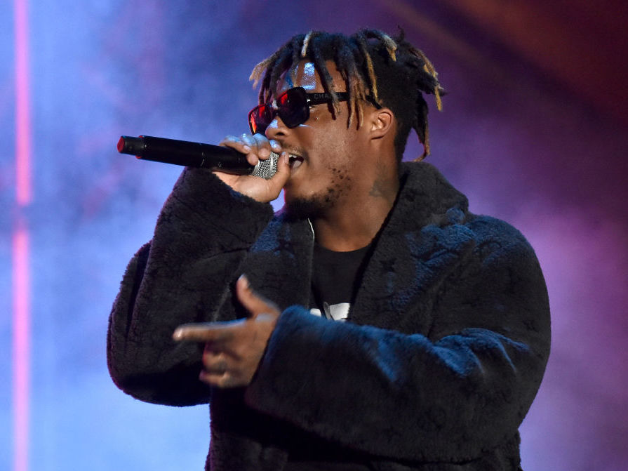

Juice Wrld (Jarad Anthony Higgins)


Jarad Anthony Higgins (December 2, 1998 – December 8, 2019), known professionally as Juice Wrld.
Was a succesfull rapper who died of a siezure. His song "Lucid Dreams" has been played on music
streaming platform Spotify over one billion times. "Lucid Dreams", along with his earlier hit single
"All Girls Are the Same", helped him to secure a recording contract with Lil Bibby's Grade A Productions and Interscope Records.